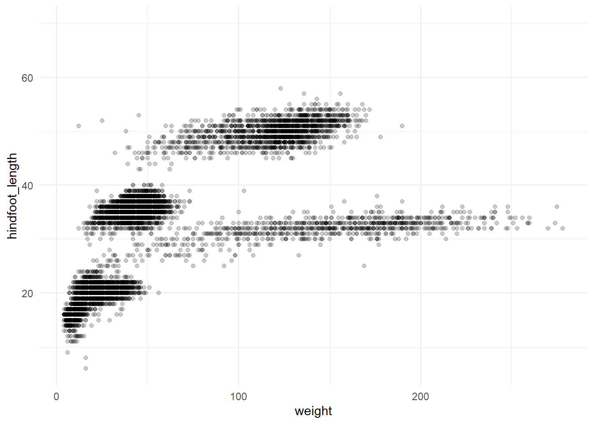
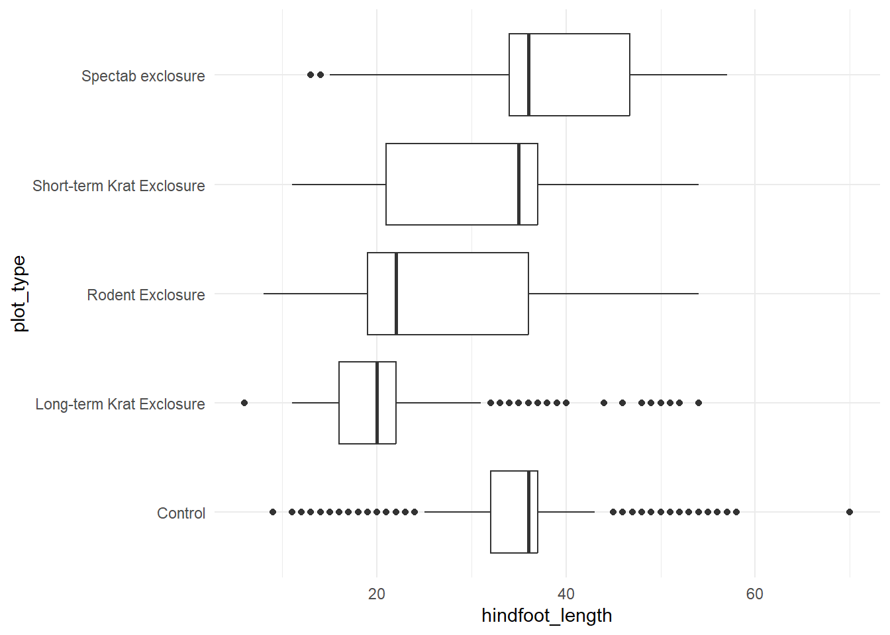
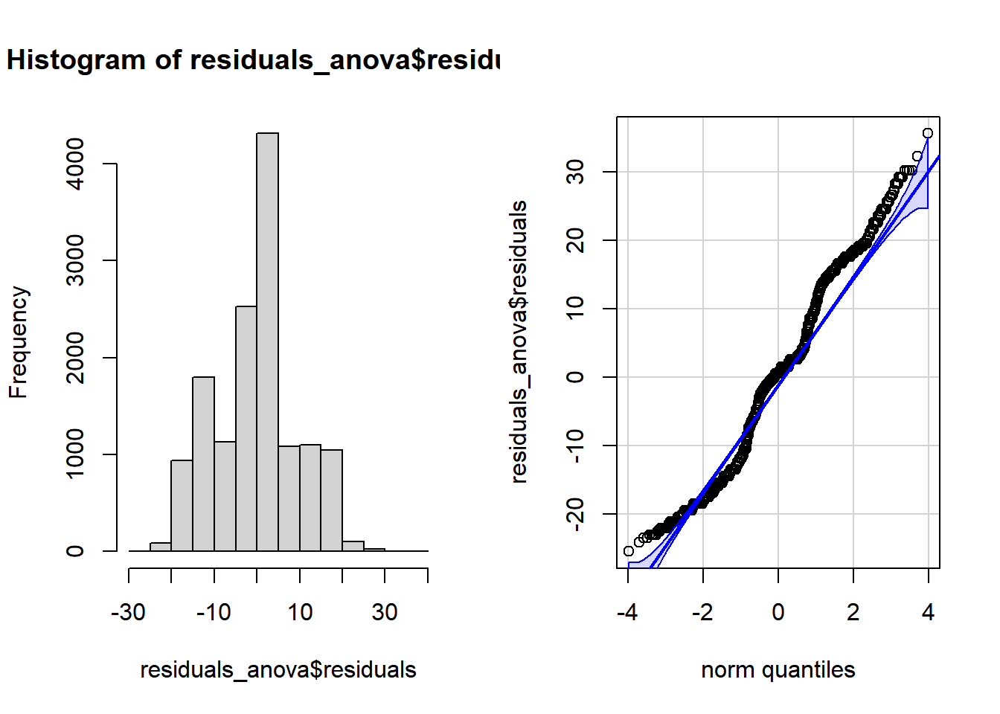

library(readr)
library(dplyr)
library(tidyr)
library(ggplot2)
library(purrr)
library(car)
library(rstatix)R Code
Writing better code
We can improve our scripts by writing code which is:
- Readable
- Use a consistent style guide (like the tidyverse one)
- Be clear, concise, and consistent when naming objects, datasets, and functions
- Break your scripts up into sections (Ctrl+Shift+R)
- Reusable
- Write functions to perform sets of operations
- Use iteration (for loops, or
{purrr}) - Consider creating packages for data and code used in multiple places
- Break up long scripts into separate files (cleaning, manipulating, plotting)
- Documented
- Use comments to explain why you did something the way you did
- Include a README with each project to provide important context and background
Let’s take a common example of some data analysis and apply the above principles when writing the code. First load the packages we need:
Let’s read in a dataset split into separate files. Instead of reading in each file separately, we can use readr::read_csv() to read them all in at once, bind them together into a single dataframe, and add a new column containing the filename of the data source. The dataset we’re working with contains measurements taken from mammals captured in the Chihuahuan desert. It is split into 4 separate .csv files based on time periods the measurements were recorded within.
# Combine data from different collection periods
files <- list.files(path = "data_raw",
pattern = "\\.csv",
full.names = TRUE)
surveys <- read_csv(files, id = "source")Let’s take a quick look at the mean hindfoot_length and weight for each species. We may want to save this summary table to use later.
surveys |>
group_by(species_id) |>
summarise(across(c(hindfoot_length, weight), mean, na.rm = TRUE)) |>
na.omit() |>
write_csv("data/weight-foot-by-species.csv")Let’s say we wanted to create a separate scatterplot for each species showing hindfoot length vs weight. Even if we’re only interested in species codes with at least 100 valid observations, that’s still quite a few plots.
valid_species <-
surveys |>
drop_na(all_of(c("weight", "hindfoot_length"))) |>
count(species_id) |>
filter(n >= 100) |>
pull(species_id)Let’s first create a basic plot to show what we’re trying to produce.
# Create an example of a plot
ggplot(surveys, aes(x = weight, y = hindfoot_length)) +
geom_point(alpha = 0.2) +
theme_minimal()
Rather than write out the same code many times, this is a good time to write our own function. If we encapsulate all the plotting steps in a function, we can then use {purrr} to apply the function over the species and create the plots.
plot_species <- function(data, x_var, y_var, species) {
# Ensure the figure directory exist, or if not, create it
if (!dir.exists("figures")) {
dir.create("figures")
}
# Create the plot
plots <-
data |>
filter(species_id == {{ species }}) |>
ggplot(aes(x = {{ x_var }},
y = {{ y_var }})) +
geom_point(alpha = 0.2) +
labs(title = paste("Species:", species)) +
theme_minimal()
# Construct the filename and save
file_path <- paste0("figures/", species, "_plot.png")
ggsave(filename = file_path, plot = plots, width = 6, height = 4)
}
# purrr::walk iterates over a list or vector with a function
walk(valid_species, ~ plot_species(
data = surveys,
x_var = weight,
y_var = hindfoot_length,
species = .x
))In 1977, 24 experimental plots were established and each plot was manipulated in one of five ways. We can look at these plot types using dplyr::distinct()
surveys |> distinct(plot_type)# A tibble: 5 × 1
plot_type
<chr>
1 Control
2 Long-term Krat Exclosure
3 Rodent Exclosure
4 Spectab exclosure
5 Short-term Krat ExclosureOne question we may have is how this impacts the mammals captured in these areas.
Let’s look at plot_type to see how hindfoot_length differs.
ggplot(surveys, aes(x = plot_type, y = hindfoot_length)) +
geom_boxplot() +
theme_minimal() +
coord_flip() 
There may be a relationship between hindfoot_length and plot type.
We have a continuous dependent variable (hindfoot_length) and a categorical independent variable (plot_type), with multiple levels. An ANOVA would be an appropriate statistical test here, complemented by some post-hoc comparisons to test the individual differences in hindfoot_length across each plot_type.
First we have to check assumptions:
- Normality
As with any general linear model we need to check that the data conforms to a normal distribution.
We can do this graphically or statistically. To do it graphically we plot the residuals in a histogram or QQ-plot, and to do it statistically we would use a Shapiro-Wilk test, but these tests can be quite conservativegiven large sample sizes.
Here we’ll plot the residuals using a histogram and QQ-plot.
# Run the ANOVA to get our residuals
residuals_anova <- aov(hindfoot_length ~ plot_type, data = surveys)
# Create plot space
par(mfrow = c(1, 2))
# Create histogram
hist(residuals_anova$residuals)
# Create QQ-plot
qqPlot(residuals_anova$residuals, id = FALSE)
The residuals do not follow a normal distribution, but in this case, combined with our large sample size our ANOVA will be fairly robust to any violation of normality.
- Homogeneity - Equality of Variances
We also need to check whether the variance in hindfoot_length is roughly equal across all plot types. We can do this, again, using statistical methods, graphical methods, or both. Let’s use a boxplot.
ggplot(surveys, aes(x = plot_type, y = hindfoot_length)) +
geom_boxplot(outliers = FALSE) +
theme_minimal() +
coord_flip() # Using coord flip to rotate the plot so the labels are easily readable
This assumption has been violated. Having removed the outliers, we can see that the whiskers of the Control and Long-term Krat Exclosure plots are much smaller than the other three plot types.
We have two options here. The first would be to use a non-parametric alternative, such as the Kruskall-Wallis H test. The second would be to use a parametric alternative that is robust to violations of this assumption. The most commonly used is the Welch test.
- Independence of observations
This assumption states that the data has been collected from random samples and are not related. This is verified through good experimental design. We can state that we have satisfied this assumption.
Performing the ANOVA
oneway.test(hindfoot_length ~ plot_type, data = surveys, var.equal = FALSE)
One-way analysis of means (not assuming equal variances)
data: hindfoot_length and plot_type
F = 1082.8, num df = 4.0, denom df = 5099.1, p-value < 2.2e-16According to this ANOVA there is a significant effect of plot type on hindfoot length. Now lets explore this effect further by conducting some post-hoc comparisons. We will use a simple bonferroni correction. This can be used to determine our new alpha level, by dividing our original alpha level (.05) by the number of comparisons we will be making (10).
pairwise_t_test(
surveys, hindfoot_length ~ plot_type, pool.sd = FALSE,
p.adjust.method = "bonferroni"
)# A tibble: 10 × 10
.y. group1 group2 n1 n2 statistic df p p.adj
* <chr> <chr> <chr> <int> <int> <dbl> <dbl> <dbl> <dbl>
1 hindfoot_length Contr… Long-… 6275 1605 57.1 3319. 0 0
2 hindfoot_length Contr… Roden… 6275 2133 28.6 3796. 1.77e-163 1.77e-162
3 hindfoot_length Contr… Short… 6275 2446 6.41 4365. 1.65e- 10 1.65e- 9
4 hindfoot_length Contr… Spect… 6275 1686 -9.82 2730. 2.10e- 22 2.10e- 21
5 hindfoot_length Long-… Roden… 1605 2133 -20.4 3736. 1.48e- 87 1.48e- 86
6 hindfoot_length Long-… Short… 1605 2446 -40.2 4022. 8.58e-298 8.58e-297
7 hindfoot_length Long-… Spect… 1605 1686 -51.3 3127. 0 0
8 hindfoot_length Roden… Short… 2133 2446 -18.5 4549. 1.05e- 73 1.05e- 72
9 hindfoot_length Roden… Spect… 2133 1686 -30.5 3613. 2.18e-182 2.18e-181
10 hindfoot_length Short… Spect… 2446 1686 -13.3 3750. 1.33e- 39 1.33e- 38
# ℹ 1 more variable: p.adj.signif <chr>We can see from our pairwise tests that all of the comparisons are significant.